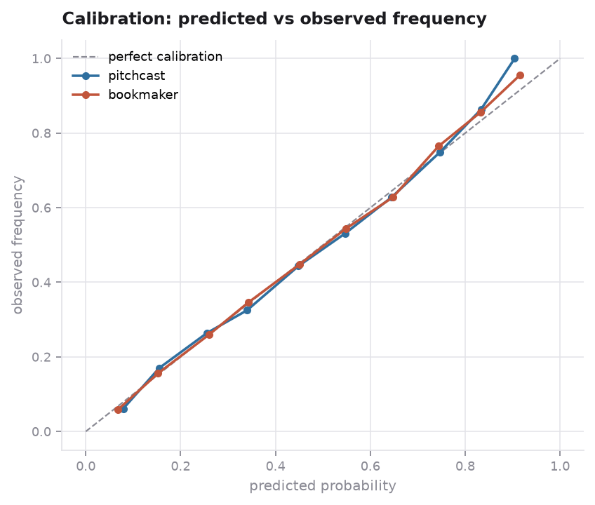
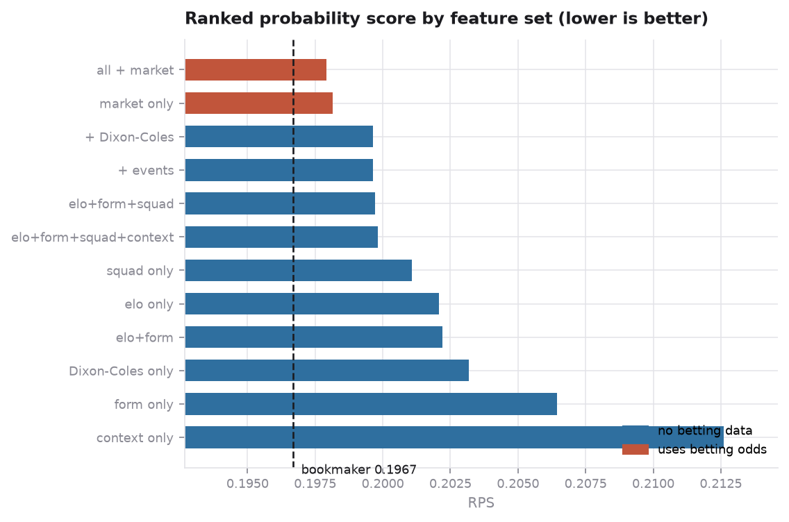
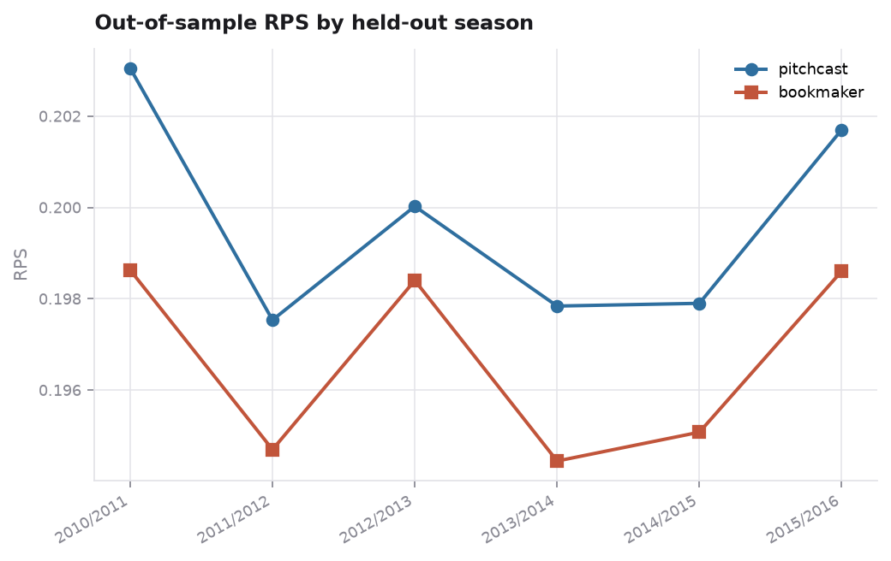
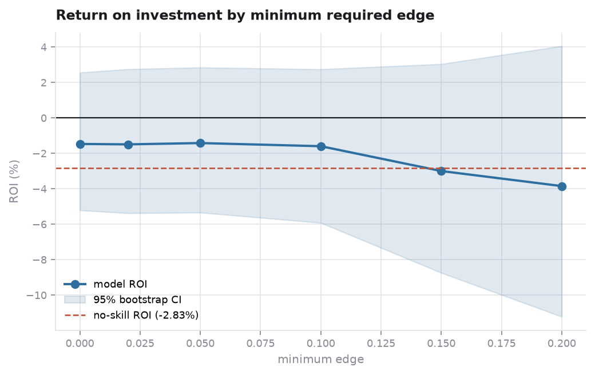

Machine learning · Sports forecasting
Probabilistic forecasting of 25,979 European football matches across 11 leagues, evaluated with walk-forward validation and scored against the one benchmark that matters: the bookmaker's own closing odds.
The model sees no odds. It forecasts from Elo ratings, rolling form, the FIFA ratings of the eleven players who actually started, and a Dixon-Coles goal model — then is scored against a bookmaker that has all of that plus injury news, team news and money flow.
| Task | Baseline | This model | Bookmaker |
|---|---|---|---|
| Three-way (home / draw / away) | 45.5% | 52.3% | 53.0% |
| Home win vs not | 54.5% | 64.4% | 65.3% |
| Decided matches only | 61.0% | 70.1% | 70.9% |
| When the model is >80% confident (4% of matches) | — | 86.3% | — |
Why not just report accuracy? Because it throws away everything but the top guess. A forecast of 34/33/33 and one of 90/5/5 score identically when the favourite wins. An "always predict home" baseline matches the base-rate forecast on accuracy (45.9% vs 45.6%) while scoring a log loss of 18.7 against 1.07. The primary metric here is the ranked probability score, the standard in football forecasting, which also respects the ordering of outcomes.

Features are grouped into blocks that can be switched off independently, so each one's contribution is measured rather than assumed.
| Feature set | RPS | Accuracy |
|---|---|---|
| Head-to-head and promotion context only | 0.2126 | 48.9% |
| Rolling form only | 0.2065 | 50.3% |
| Dixon-Coles goal model only | 0.2032 | 51.5% |
| Elo only | 0.2021 | 51.7% |
| FIFA squad ratings only | 0.2011 | 52.3% |
| Everything, no betting data | 0.1996 | 52.4% |
| Bookmaker odds, passed through a model | 0.1981 | 52.7% |
| Bookmaker odds, used directly | 0.1967 | 53.0% |

Four separate attempts to close the remaining gap produced nothing:
| Change | RPS | Accuracy |
|---|---|---|
| Elo + form + squad + Dixon-Coles | 0.1997 | 52.2% |
| + head-to-head, promotion, squad churn | 0.1996 | 52.4% |
| + 40-configuration hyperparameter search | 0.1998 | 52.2% |
| + stacking three models through a meta-learner | 0.2000 | 52.3% |
| + probability calibration | 0.2013 | 51.7% |
"I tried things and they failed" is not evidence, so the residual gap was decomposed across every cut available:
| Cut | RPS gap to the market |
|---|---|
| Early / mid / late season | +0.0036 / +0.0026 / +0.0044 |
| Full starting XI known vs incomplete | +0.0030 / +0.0031 |
| Promoted team involved vs not | +0.0031 / +0.0030 |
| Market unsure / moderate / confident | +0.0036 / +0.0027 / +0.0028 |
| Across nine leagues | +0.0005 to +0.0041 |
The gap is flat everywhere, and that is the informative part. A modelling deficiency concentrates — a model blind to team news would fall apart late in the season and on fixtures with incomplete lineups. This one does not. A uniform penalty of roughly 0.003 across every partition is the signature of a constant information disadvantage: injuries, suspensions, motivation, money flow. None of it is in this database, and no amount of feature engineering conjures it.
The ceiling is set by the sport, not the model. Bookmakers reach about 53% on three-way football, and 55.8% in the most predictable league in this dataset. Anyone reporting substantially more is dropping draws, leaking future information, or comparing against the wrong baseline.

No — and the simulation is included precisely because that is the interesting part. Staking fractional Kelly on the best price across six bookmakers, on out-of-sample forecasts only:
| Minimum edge | Bets | ROI | 95% bootstrap interval |
|---|---|---|---|
| 0% | 21,871 | −1.47% | [−5.21%, +2.56%] |
| 5% | 15,833 | −1.42% | [−5.34%, +2.85%] |
| 10% | 11,326 | −1.59% | [−5.92%, +2.75%] |
| 20% | 5,818 | −3.85% | [−11.22%, +4.06%] |
The no-skill return is −2.83% — what a bettor loses to the margin when shopping the best of six books. The model loses 1.4%, so it converts roughly half the margin into genuine edge, but not enough to clear it. Reporting a positive point estimate from a single favourable threshold would have been easy; the threshold sweep exists to make that impossible.

Three problems that materially change the results, each found by checking rather than assuming.
The shots-on-target column is non-null for 54.7% of matches — but 40.5% of those are the stub <shoton />, which parses without error and yields a count of zero. That files roughly 5,800 ordinary matches, averaging 1.54 home goals, under "no shots taken". Real usable coverage is 32.6%.
Measured against a control — the goal feed, which reconciles with the scoreline at r=0.96 — shot difference explains goal difference at only r=0.13, and corners at r=0.07. Possession, at r=0.24, is the only genuinely informative feed. That is why the event block is wired in as switchable rather than assumed useful, and why it contributes nothing.
An earlier version of this analysis normalised each bookmaker's odds by overwriting the columns in place:
df[home] = (1/df[home]) / (1/df[home] + 1/df[draw] + 1/df[away])
df[draw] = (1/df[draw]) / (1/df[home] + ...) # home is now a probabilityBy the second line the home column holds ~0.45 rather than odds of ~2.2, and its reciprocal re-enters the denominator. The resulting triples sum to 0.573 instead of 1.0, with the away probability collapsed to 0.021 against a correct 0.281 — a 13× understatement across 20 of the 30 odds features. It is now pinned by a regression test.
Python, LightGBM, scikit-learn, SciPy. 38 tests, linted, CI, and a command-line interface where every number above is reproducible with one command.
uv run pitchcast fetch # 313 MB, checksum-verified
uv run pitchcast build # parse feeds, tune Elo, build features
uv run pitchcast backtest # walk-forward evaluation
uv run pitchcast audit # reproduce and re-score the earlier version